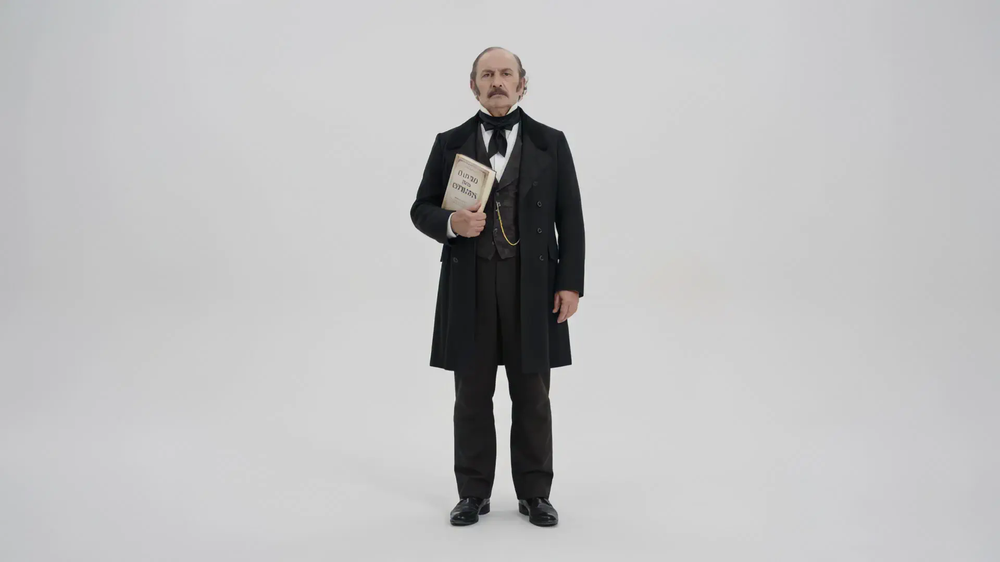
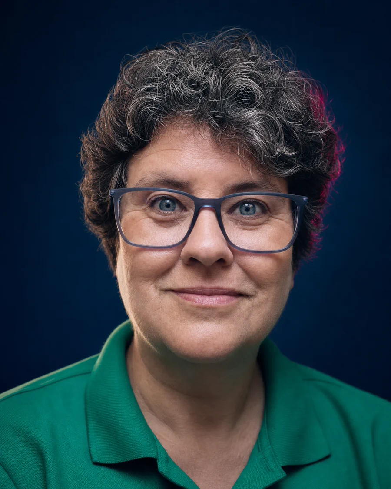
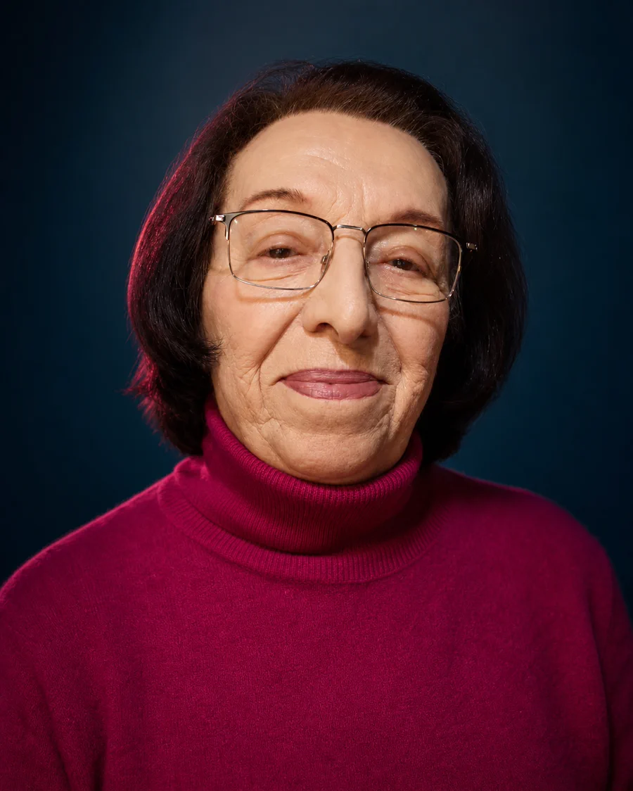
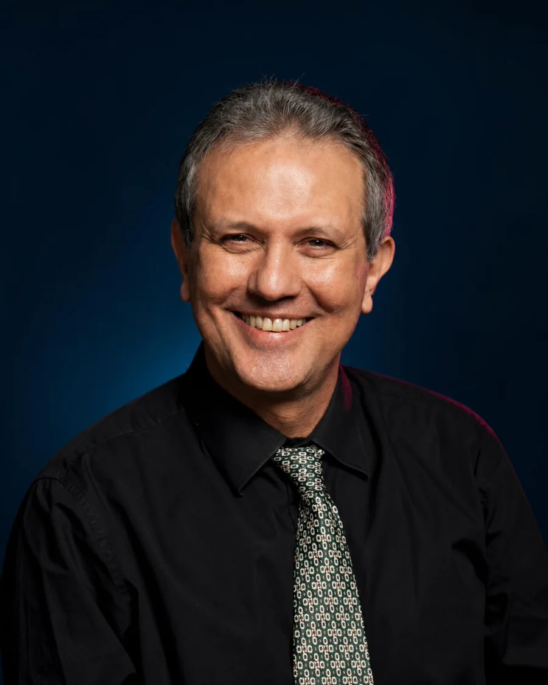

Psicologia · Literatura
Ana Tereza Camasmie
Doutora em Psicologia Clínica, palestrante, escritora e trabalhadora do Centro Espírita Tarefeiros do Bem, no Rio de Janeiro.

FEEGO apresenta · 2027
E se a resposta
estiver em você?
Federação Espírita do Estado de Goiás · 2027
Um encontro para que o Evangelho deixe de ser apenas palavra e se torne presença — nas escolhas, nos afetos e no serviço.
O tema
A transformação começa quando a mensagem do Cristo encontra morada em nós e ganha forma no cotidiano.
A 43ª edição propõe um movimento íntimo e concreto: estudar para compreender, conviver para acolher e servir para transformar.
Aprofundar a razão sem perder a sensibilidade.
Reconhecer no outro uma oportunidade de encontro.
Traduzir a fé em presença, cuidado e ação.
Palestrantes confirmados
Diferentes trajetórias, reunidas pelo estudo, pela experiência e pelo compromisso com a mensagem espírita.
Psicologia · Literatura
Doutora em Psicologia Clínica, palestrante, escritora e trabalhadora do Centro Espírita Tarefeiros do Bem, no Rio de Janeiro.
Evangelho · Pesquisa
Palestrante espírita, fundador e coordenador do NEPE Paulo de Tarso, da Associação Espírita Obreiros do Bem.

ConfirmadaComunicação · Movimento Espírita
Assessora nacional de Comunicação Social Espírita do CFN/FEB e ex-diretora do Conselho Espírita do Estado do Rio de Janeiro.
Doutrina · Literatura
Palestrante e escritora espírita, fundadora do Lar Espírita Caminho do Cristo, em Santos, com nove livros publicados.

ConfirmadaCiência · Espiritualidade
Professora emérita da USP, médica-veterinária, escritora e coordenadora do NUVET da AME-SP e do NUVET Brasil.

ConfirmadoMedicina · Terapia
Médico homeopata, terapeuta transpessoal, escritor e diretor da Associação Médico-Espírita do Pará.
Memória FEEGO
Desde 1985, cada edição acrescenta novas vozes a uma mesma caminhada de estudo, convivência e amor.
Arquivo fotográfico
Palco, arte, estudo e convivência nos registros que atravessam diferentes edições.
Programação completa
Assista à playlist completa da edição dedicada à fé raciocinada como caminho de equilíbrio espiritual.
Abrir playlist no YouTubeInformações
As inscrições estão abertas na plataforma oficial do evento.
Garantir inscriçãoA agenda completa e os horários serão publicados em breve.
Em preparaçãoGoiânia, Goiás. Os detalhes do espaço serão confirmados aqui.
Em breve43º Congresso · 2027
Reserve seu lugar e acompanhe os próximos anúncios da programação, do local e das experiências da 43ª edição.
Quero me inscreverContato
Para dúvidas sobre inscrições e informações do Congresso, fale com a secretaria da FEEGO.
+55 (62) 3281-0200 +55 (62) 99348-1215 secretaria.congresso@feego.org.br Segunda a sexta-feira, das 8h às 17h